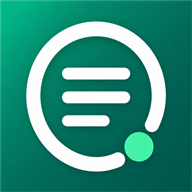

by Craftopia
A privacy-conscious note app where checklists and notes stay laid out side by side
CrispNote is a Keep-style app that lets you manage checklist-style notes and freeform notes together in one grid. Your data is stored directly in your own Google Drive or OneDrive account — it never passes through any server the developer runs.
Use CrispNote right in your browser — no installation required.
Open the web version (free for 30 days)
Your notes are stored inside your browser. Clearing your browser data will remove them from this device, so syncing with Google Drive or OneDrive is recommended for anything important.
The first 30 days are free, with every feature unlocked. To keep editing after that, buy a one-time licence for 500 JPY. There is no subscription and no further cost — you pay once and it never expires.
The checkout could not be opened. Please email anesapp.support@gmail.com and we will help.
Checkout shows the price in your local currency, with local tax applied where required.
The Android version is free on
Google Play, and the
Windows version is available from the
Microsoft Store.
See the privacy policy.
For feedback or bug reports, please use this form or email anesapp.support@gmail.com.